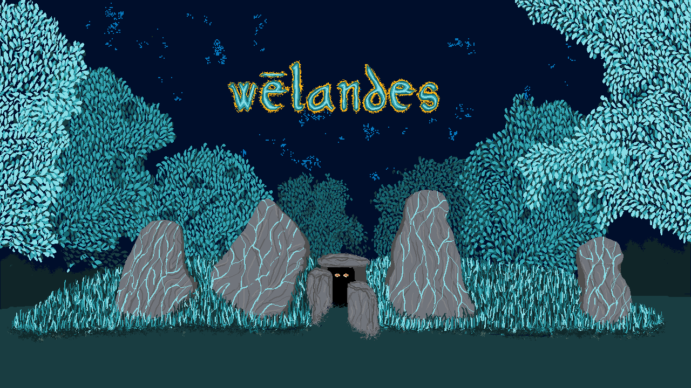

Wēlandes
An Anglo-Saxon puzzle game using Old English translation.

-
Solve ancient mysteries in the ethereal world of Anglo-Saxon Britain. You are the spel-wefa, use your magical translation devices to help the gods, beasts, and gentlefolk of Old English poetry. Journey the ageless chalk hills surrounding Wayland’s Smithy; unearth the stories that wander within.
Fact Sheet
Developer: The Shimmer Index
Demo release: 1 October 2026
Full release: Q1 2027
Platforms: PC
Genre: Puzzle
Price: TBA
Languages: English, Old English (!)
Contact: shimmer.index@gmail.com
Description
Wēlandes charts a course through seminal Old English works from the Anglo-Saxon period; bringing to life riddles, poems, medicinal texts, and myths. A rich visual language elevates these woven stories to life, beating life to stories of the page. You will explore this atmosphere in words, not swords, not violence.
The game is set in Anglo-Saxon England along the Ridgeway, the oldest path in Britain. You will explore various places of power - neolithic burial mounds, chalk hill carvings, standing stones - these places imbued with language, myth, and stories.
Investigate, translate, solve. Store translated words in a linguistic constellation, a visual repository of language. Connect related words, see the patterns, and immerse in a vast cosmos of words. A visual tool of language learning, unique to you.
About The Shimmer Index
The Shimmer Index is the creative output of James Fray, a solo game dev. The studio focusses on the process of making and world-builiding as antidote to slopculture. Make with care, with kindness; loud words, softly spoken.
The current main project of the studio is Wēlandes, an Anglo-Saxon puzzle game.